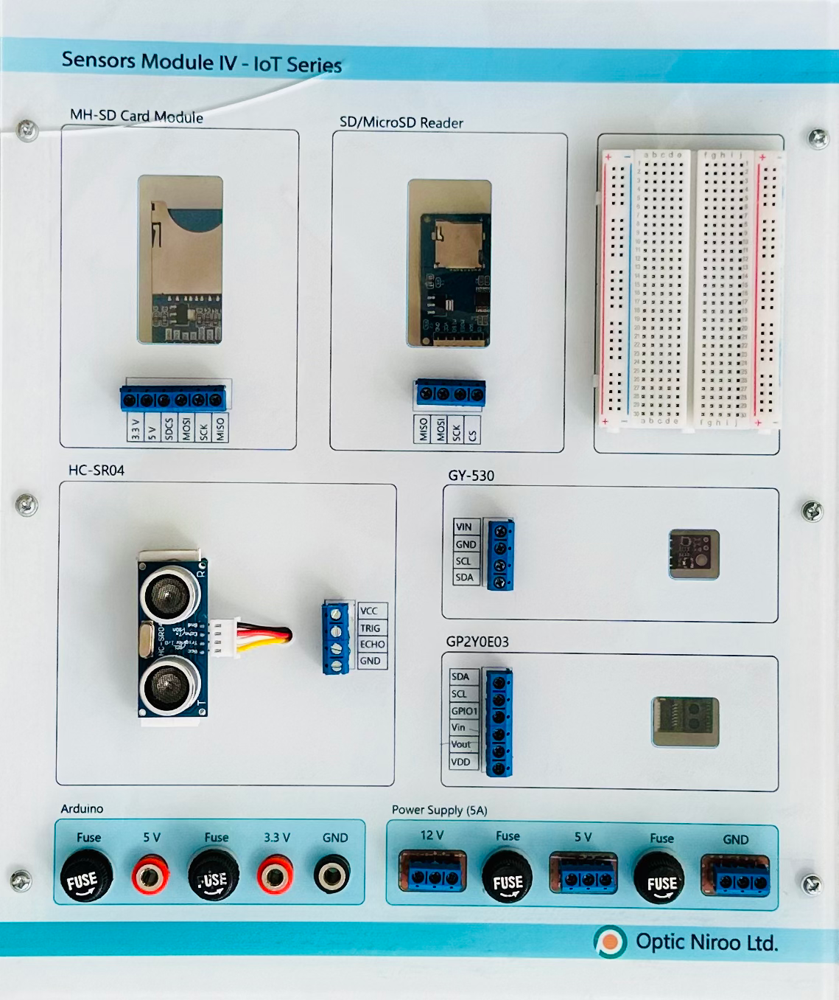

| نام تابلو: تابلو 06: حسگرهای چهارم |
سال ساخت: 2025 |
| دستهبندی: تابلو |
نام شرکت سازنده: اپتیکنیرو - Optic Niroo |
| کشور سازنده: ایران |
تابلو 06 «حسگرهای چهارم» دربردارنده موارد زیر است:
- ماژول MH-SD Card (خوانش و نگارش اطلاعات با SD Card)
- ماژول MicroSD Reader (خوانش و نگارش اطلاعات با MicroSD Card)
- حسگر HC-SR04 (فاصلهسنج فراصوتی)
- حسگر GP2Y0E03 (فاصلهسنج فروسرخی)
- حسگر GY-530 (فاصلهسنج لیزری)
- بِرِدبُرد کوچک